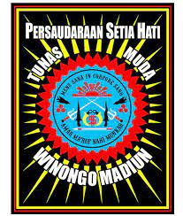
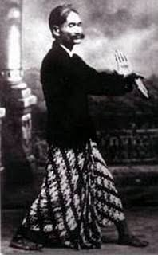

PSHW(Persaudaraan Setia Hati Winongo)
Persaudaraan Setia Hati Winongo (PSHW) merupakan salah satu perguruan silat besar yang ada di Indonesia. Padepokan pusat perguruan silat ini berada di Kelurahan Winongo, Kecamatan Manguharjo, Kota Madiun, Jawa Timur.
Dikutip dari artikel ilmiah berjudul Setia Hati Winongo (Studi Deskriptif Tentang Pola Interaksi pada Hubungan Kekerabatan di Persaudaraan Pencak Silat Setia Hati Winongo Kecamatan Manguharjo Kota Madiun)karya Tegar Prahara, Persaudaraan Setia Hati Winongo berdiri pada 15 Oktober 1966. PSHW ini didirikan oleh Raden Djimat Hendro Seowarno yang merupakan murid kesayangan dari Ki Ngabehi Soerodwirdjo. Sosok Soerowirdjo ini merupakan pendiri perguruan pencak silat Setia Hati atau yang biasa disebut Sedulur Tunggal Kecer (STK) pada 1903 di Desa Tambak Gringsing, Kota Surabaya

Ki Ageng Ngabehi Soerodiwirdjo
Namanya Muhamad Masdan. Lahir tahun 1876 di Surabaya, putra sulung Ki Ngabei Soeromihardjo. Sorang mantri cacar di daerah Ngimbang, Jombang. Dia bersepupu dengan RAA Soeronegoro (Bupati Kediri saat itu). Ki Ageng Ngabehi Soerodiwirdjo memiliki garis silsilah dengan Betoro Katong yang merupakan pendiri kabupaten Ponorogo, Jawa Timur.
Muhamad Masdan adalah peletak dasar pertama pencak silat aliran Setia Hati. Setelah beranjak dewasa, ia bernama Ki Ageng Ngabehi Soerodiwirjo atau Eyang suro
Setelah menamatkan Sekolah Rakyat pada 1890, Ki Ageng Ngabehi Soerodiwirjo diasuh pamanya, Wedono di Wonokromo, Surabaya. Ia sempat mengenyam pendidikan di pondok pesantren Tebu Ireng Jombang. Dari sini, ia mulai mengasah bela diri pencak silat, sebelum pindah ke Parahiyangan, Bandung pada 1892. Di Parahiyangan, kemampuan bela dirinya semakin matang. Berbagai aliran pencak silat ia pelajari.
Sejak itu, Ki Ageng Ngabehi Soerodiwirjo berpindah-pindah ke berbagai tempat, seperti Jakarta, Lampung, Padang dan Aceh. Ia berguru dengan tokoh silat dan mendalami berbagai aliran pencak silat di setiap tempat yang ia singgahi, sebelum kembali ke Surabaya pada 1902.
Pada 1902 Ki Ageng Soerodiwirdjo bekerja di Kampung Tambak Gringsing, Surabaya sebagai anggota polisi berpangkat mayor polisi. Tahun 1903 ia mendirikan perkumpulan bernama ‘Sedulur Tunggal Kecer”. Sedangkan pencak silatnya bernama “Joyo Gendelo Tjipto Muljo”.
Pada 1917, Ki Ageng Ngabehi Soerodiwirjo mendirikan perguruan Setia Hati (SH) di desa Winongo, Madiun, Jawa Timur. ‘Sedulur Tunggal Kecer” diganti dengan “Setia Hati”. Setia Hati bertujuan mengikat rasa persaudaraan antar warga Setia Hati. Ki Ageng Ngabehi Soerodiwirdjo wafat pada hari Jum`at, 10 Nopember 1944 dan di makamkan di desa Winongo, Madiun dalam usia 68 tahun.

Agus Wiyono
Madiun – Bapak Pengasuh yang juga Ketua Umum Persaudaraan Setia Hati Winongo Tunas Muda (PSHW-TM) H.R. Agus Wiyono Santoso, S.Sos menyerukan kepada warga PSHW TM menjaga situasi keamanan dan ketertiban masyarakat (Kamtibmas) dalam melaksanakan tradisi Suran Agung. Hal ini sesuai dengan komitmen dari PSHW-TM untuk mewujudkan situasi Kamtibmas yang kondusif.
H.R. Agus Wiyono Santoso, S.Sos yang juga anak dari penerus Perguruan Setia Hati Tunas Muda Winongo yang bernama R. Djimat Hendro Soewarno itu juga mengatakan bahwa dalam kegiatan PSHW TM tanggal 27-30 Juli 2023 menyelengarakan kegjatan prosesi kecer warga baru PSHW di Lapangan Kelurahan Winongo, Kota Madiun. Untuk itu pihaknya berharap Suran Agung PSHW-TM berlangsung aman tanpa adanya kendala.